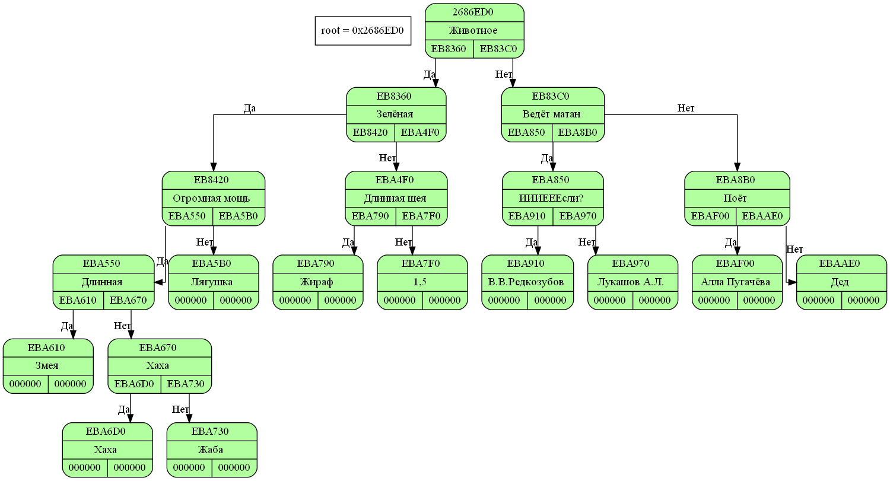

Dump in Akinator/main.cpp(31) in function int main() Stack[000000000061FDF0] "&tree"created at int main() at Akinator/main.cpp(-168797888): Status: enable { ( Животное ( 1,5 )( Ведёт матан ( Математик )( Поёт ( Алла Пугачёва )( Дед )))) } 